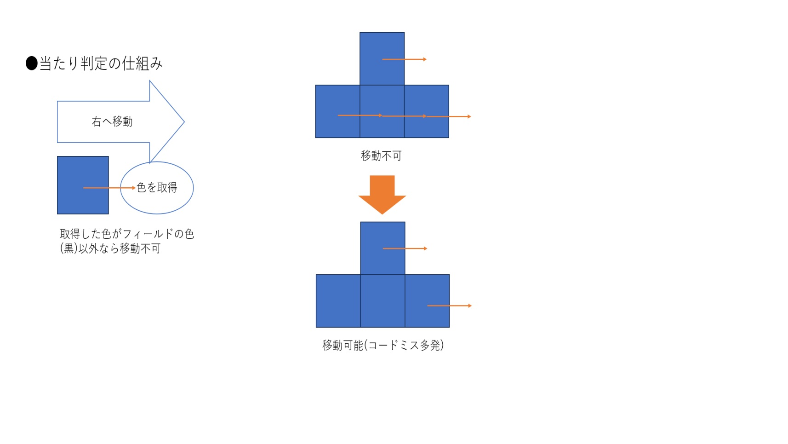

pythonを用いたゲームの作成
2023/11/23 (最終更新 2023/12/07)
はじめに
習うより慣れろということで、pythonの勉強がてらテトリス風のゲームを作ってみることにしました。
計画
ちなみに計画もくそもありません。ほしい機能についてその都度googleで調べて、思いついたものを順に実装していきました。フローチャートとかもないです。まじでなんでこれで始めたんだ
ゲーム画面の表示にはGUIというのが必要らしいです。そのためのライブラリにTkinterというのがあるらしいのでそれを使っていましたが、使いづらかった（よくわからなかった）のとゲーム用のpygameというものを見つけたのでpygameを使って書き直しました。きちんと計画を立てないとこういうことになるんですね。
プログラミング
とりあえずゲームの仕組みを作ります。タイトルとかスコアとかは後にして、ブロックを操作して下に落とせるようにします。numpy配列なんて便利なものは知らなかったので、ミノは正方形4つを連結させたものとしフィールドに直接配置しました。すでにクソコードの雰囲気がありますが、初心者というのを盾にこのままいきます。
次にキーボード操作でミノを落とせるようにします。ChatGPTにお願いして無駄に長押し防止のコードを作ってもらったので移動は連打が必要です。
このままでは際限なくミノが移動するので、ミノを動かすフィールドを作ります。フィールドの壁にぶつかったらそれ以上先には進めなくしたいので、当たり判定も必要ですね。当たり判定は移動先の座標の画面の色を取得して行うパワープレイです。これのせいで大量のバグ（というかミス）が発生しました。
ミノを構成する4つのブロックそれぞれの移動先の座標を指定して色を取得するのですが、下図のような問題が発生します。これを防ごうとしたらコードのミスが多発しました。やめようかと思いました。

同様に回転についても可・不可の判定を実装しました。同様にミスが多発しました。やめようかと思いました。
一番つらいところが終わりました。正直まだたまにエラーが出ます。許してください。もう気力が残っていないのでタイトルやこまごましたものは適当です。ほかにも追加したい要素はありますが、このクソコードは捨ててnumpy配列を使ったものを現在制作中なのでそちらで実装します。
成果物
せっかく作ったのでゲームをここに置いておきます (2023/12/07追記 リンクを公開しました。ダウンロードボタンからダウンロードして遊んでください) 。a,s,dキーで左、下、右、w,eキーで反時計、時計回りに回転、スペースキーでハードドロップです。良ければやってみてください。
ちなみに製作者（素人）の最高スコアは4000ちょっとでした。
おわりに
計画を立ててから始めることの重要性がよくわかりました。今回はpythonについて何も知らない状態でのスタートで、いろんな機能をふわっと触れたのでよしとします。今後はnumpy配列を使ったテトリス改良版と、できれば簡単なニューラルネットワークも作ってみたいと考えています。